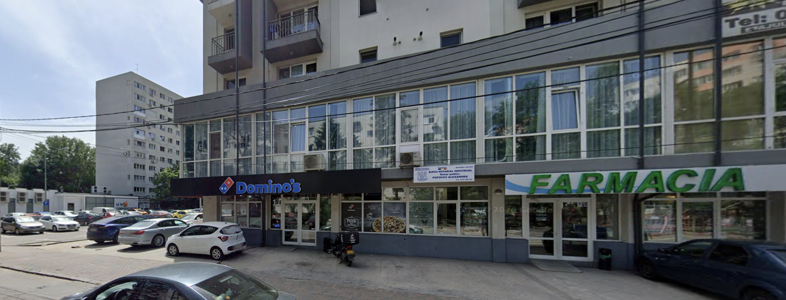

Urban Hunter
Misterele Bucureștiului de altădată
Pornește într-o expediție urbană unică. Descoperă comorile ascunse printre străzile vechi și poveștile uitate ale capitalei.
Salut, Exploratorule!
Uite prima ta destinație. Nu te grăbi, aplicația știe când ai ajuns.

Ești la — metri distanță
apasă pe buton pentru a calcula distanța
Activează permisiunea GPS pe telefon pentru a naviga. Dacă ești pe desktop, folosește funcția de Simulare sosire de mai sus.
Ai ajuns la prima destinație!
Te afli în zona țintă. Telefonul tău a înregistrat prezența. Ești gata de deblocare?
Bătrânul București
Urmărește distanța de pe ecran până ajungi aproape de 0. Nu ai hartă, mergi pe instinct. Când ajungi la destinație, caută numărul de pe clădire.
Ești la — metri distanță
apasă pe buton pentru a recalcula distanța
Activează permisiunea GPS pe telefon sau utilizează simularile noastre de mediu.